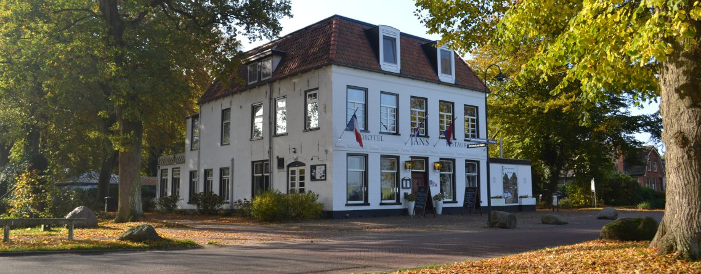
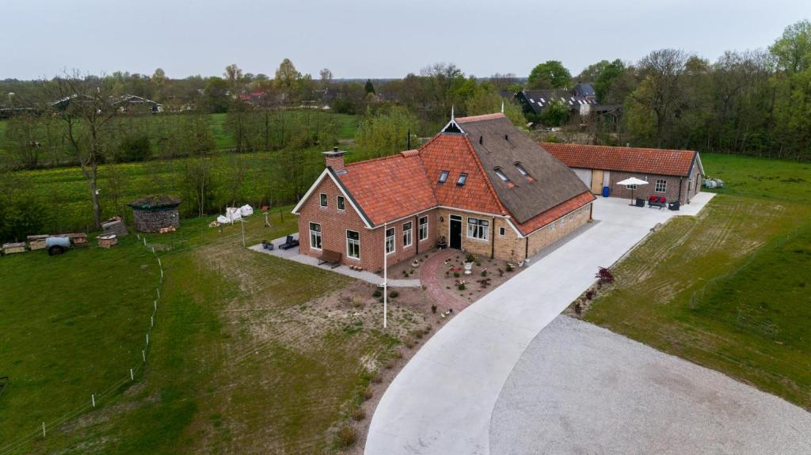
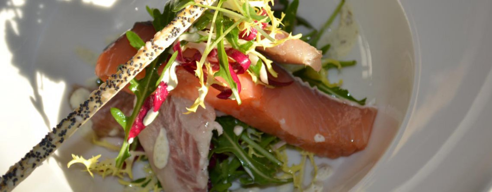

Ontdek de pracht en praal van Friesland. Bezoek de pittoreske Elfsteden plaatsjes, geniet van het prachtige landschap, toer langs de groene grasvelden, door de bossen en langs de waterkant. Bezoek één of meerdere plaatsen van de Elfsteden en trakteer jezelf op een écht Friese lekkernij. Het prachtige Zuidwest Friesland is enorm divers en leent zich dan ook uitstekend voor een bijzondere mini roadtrip in de vintage Eend (2CV). Bewonder je het ene moment nog de prachtige bossen, het andere moment kijk je uit over de prachtige Friese meren of rijd je een pittoresk stadje binnen.
Jullie beginnen jullie tocht in Rijs, daar krijgen jullie een Citroën "Deux-Chevaux" en kunnen jullie op pad.
De route en auto worden verzorgd door Op Paed.
In deze hotels zullen jullie gaan overnachten
Een geschiedenisrijk hotel in Rijs
Een Bed en Breakfast in Kollumerzwaag
Bij hotel Jans is het diner inbegrepen, ook krijgen jullie een picknick mand mee voor onderweg om gezellig te picknicken. Voor de tweede dag krijgen een bijdrage voor het diner.
Opmerkingen en vragen kunnen gesteld worden aan Peter.